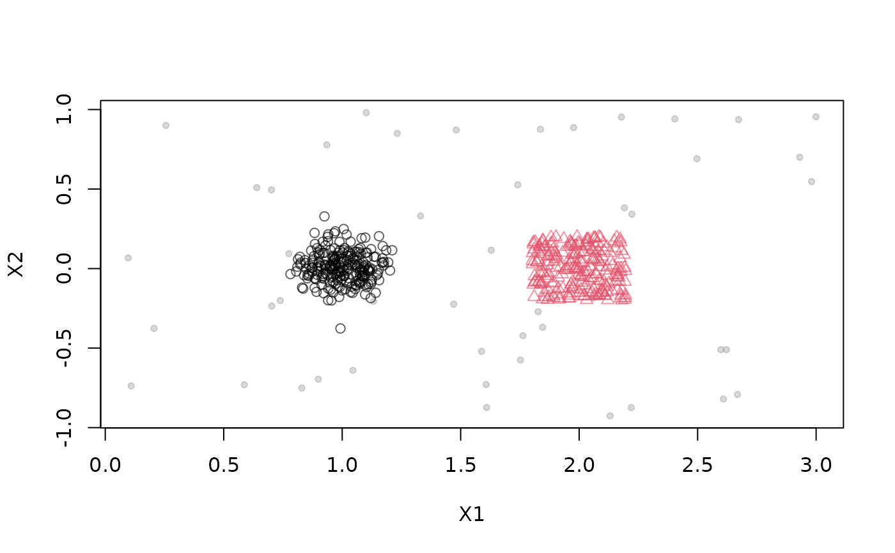

Creates an evolving cluster for use as a component of a DSD_MG data stream.
Usage
MGC(...)
MGC_Function(density, center, parameter, shape = Shape_Gaussian)
MGC_Linear(dimension = 2, keyframelist = NULL, shape = Shape_Gaussian)
keyframe(time, density, center, parameter, reset = FALSE)
add_keyframe(x, time, density, center, parameter, reset = FALSE)
get_keyframes(x)
remove_keyframe(x, time)
MGC_Noise(density, range)
MGC_Random(density, center, parameter, randomness = 1, shape = Shape_Gaussian)
Shape_Gaussian(center, parameter)
Shape_Block(center, parameter)
MGC_Static(density = 1, center, parameter, shape = Shape_Gaussian)Arguments
- ...
Further arguments.
- density
The density of the cluster. For
MGC_Function, this attribute is a function and defines the density of a cluster (i.e., how many points it creates) at each given timestamp.- center
A list that defines the center of the cluster. The list should have a length equal to the dimensionality. For
MGC_Function, this list consists of functions that define the movement of the cluster. ForMGC_Random, this attribute defines the beginning location for theMGCbefore it begins moving.- parameter
Parameters for the shape. For the default shape
Shape_Gaussianthe parameter is the standard deviation, one per dimension. If a single value is specified then it is recycled for all dimensions.- shape
A function that creates the shape of the cluster. It receives the
parameterargument described above. Available functions areShape_Gaussian(the parameters are a vector containing standard deviations) andShape_Block(parameters are the dimensions of the uniform block).- dimension
Dimensionality of the data stream.
- keyframelist
a list of keyframes to initialize the
MGC_Linearobject with.- time
The time stamp the keyframe should be located or which keyframe should be removed.
- reset
Should the cluster reset to the first keyframe (time 0) after this keyframe is finished?
- x
An object of class
MGC_Linear.- range
The area in which the noise should appear.
- randomness
The maximum amount the cluster will move during one time step.
Details
An MGC describes a single cluster for use as a component in a DSD_MG.
Different MGCs allow users to express
different cluster behaviors within a single data stream. Static, (i.e., not moving)
clusters are defined as:
MGC_Staticcluster positions are fixedMGC_Noiseallows users to add random noise.
Moving (evolving) clusters are defined as:
MGC_Linearcreates an evolving cluster whose behavior is determined by keyframes. Several keyframe functions are provided to create, add and remove keyframes. See Examples section for details.MGC_Functionallows users to specifydensity,center, andparameteras a function of time.MGC_Randomcreates a cluster that follows a random walk.
Cluster shapes can be specified using the functions:
Shape_GaussianShape_Block
New shapes can be defined as a function with parameters center and parameter that returns a single
point. Here is an example:
Examples
MGC()
#> MGC is an abstract class and cannot be instantiated!
#>
#> Available subclasses in ‘package:stream’ are:
#> MGC_Function,
#> MGC_Linear,
#> MGC_Noise,
#> MGC_Random,
#> MGC_Static
#>
#> To get more information in R Studio, type ‘MGC_’ and hit the Tab key.
### Two static clusters (Gaussian with sd of .1 and a Block with width .4)
### with added noise
stream <- DSD_MG(dimension = 2,
MGC_Static(density = .45, center = c(1, 0), parameter= .1, shape = Shape_Gaussian),
MGC_Static(density = .45, center = c(2, 0), parameter = .4, shape = Shape_Block),
MGC_Noise( density = .1, range = rbind(c(0, 3), c(-1,1)))
)
stream
#> Moving Data GeneratorClass: DSD_MG, DSD_R, DSD
#> With 3 clusters in 2 dimensions. Time is 1
plot(stream)

### Example of several MGC_Randoms which define clusters that randomly move.
stream <- DSD_MG(dimension = 2,
MGC_Random(density = 100, center=c(1, 0), parameter = .1, randomness = .2),
MGC_Random(density = 100, center=c(2, 0), parameter = .4,
shape = Shape_Block, randomness = .2)
)
if (FALSE) { # \dontrun{
animate_data(stream, 2500,
xlim = c(0,3), ylim = c(-1,1),
horizon = 100)
} # }
### Example of several MGC_Functions
### a block-shaped cluster moving from bottom-left to top-right increasing size
c1 <- MGC_Function(
density = function(t){ 100 },
parameter = function(t){ 1 * t },
center = function(t) c(t, t),
shape = Shape_Block
)
### a cluster moving in a circle (default shape is Gaussian)
c2 <- MGC_Function(
density = function(t){ 25 },
parameter = function(t){ 5 },
center= function(t) c(sin(t / 10) * 50 + 50, cos(t / 10) * 50 + 50)
)
stream <- DSD_MG(dimension = 2, c1, c2)
## adding noise after the stream was created
add_cluster(stream, MGC_Noise(density = 10, range = rbind(c(-20, 120), c(-20, 120))))
stream
#> Moving Data GeneratorClass: DSD_MG, DSD_R, DSD
#> With 3 clusters in 2 dimensions. Time is 1
if (FALSE) { # \dontrun{
animate_data(stream, 10000,
xlim = c(-20, 120), ylim = c(-20, 120),
horizon = 100)
} # }
### Example of several MGC_Linear: A single cluster splits at time 50 into two.
### Note that c2 starts at time = 50!
stream <- DSD_MG(dimension = 2)
c1 <- MGC_Linear(dimension = 2)
add_keyframe(c1, time = 1, density = 50, parameter = 5, center = c(0, 0))
add_keyframe(c1, time = 50, density = 50, parameter = 5, center = c(50, 50))
add_keyframe(c1, time = 100,density = 50, parameter = 5, center = c(50, 100))
add_cluster(stream, c1)
c2 <- MGC_Linear(dimension = 2, shape = Shape_Block)
add_keyframe(c2, time = 50, density = 25, parameter = c(10, 10), center = c(50, 50))
add_keyframe(c2, time = 100,density = 25, parameter = c(30, 30), center = c(100, 50))
add_cluster(stream, c2)
if (FALSE) { # \dontrun{
animate_data(stream, 5000,
xlim = c(0, 100), ylim = c(0, 100),
horizon = 100)
} # }
### two fixed and a moving cluster
stream <- DSD_MG(dimension = 2,
MGC_Static(density = 1, parameter = .1, center = c(0, 0)),
MGC_Static(density = 1, parameter = .1, center = c(1, 1)),
MGC_Linear(dimension = 2, list(
keyframe(time = 0, density = 1, parameter = .1, center = c(0, 0)),
keyframe(time = 1000, density = 1, parameter = .1, center = c(1, 1)),
keyframe(time = 2000, density = 1, parameter = .1, center = c(0, 0), reset = TRUE)
)))
noise <- MGC_Noise(density = .1, range = rbind(c(-.2, 1.2), c(-.2, 1.2)))
add_cluster(stream, noise)
if (FALSE) { # \dontrun{
animate_data(stream, n = 2000 * 3.1,
xlim = c(-.2, 1.2), ylim = c(-.2, 1.2),
horizon = 200)
} # }